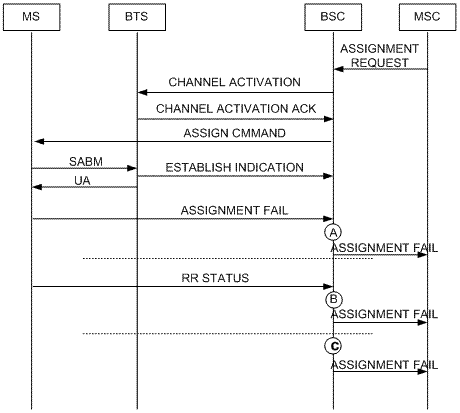
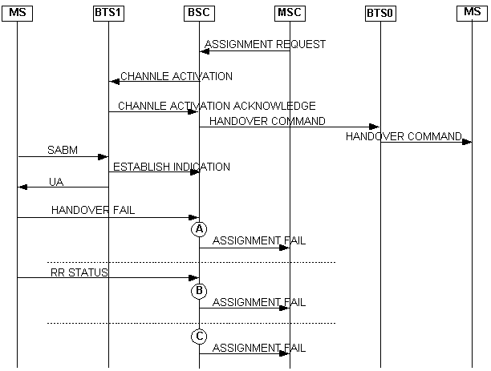

Measurement point
After sending an assignment request message to the
BSC, the MSC waits for the MS to send an ASS CMP message to the
BSC. This counter is measured in the following situations:
- The MS sends to the BSC a DATA INDICATION message, which
contains the Um assignment failure cause. If the BSC does not
perform reassignment after receiving the message, the counter is
incremented by one. See measurement point A in Figure 1.
- The MS sends an RR STATUS message to the BSC. If the cause
value carried in the message is not Semantically incorrect message,
Invalid mandatory information, Message type non-existent or not
implemented, or Conditional IE error, and reassignment is not
performed, this counter is incremented by one. See measurement
point B in Figure 1.
- After sending an assignment command message to the MS, the BSC
starts T3107, which is specified for assignment complete response.
If the timer expires, the counter is incremented by one. See
measurement point C in Figure 1.
- After receiving the assignment request message from the MSC,
the BSC does not initiate direct retry because no channel is
available for use. The MS is handed over to a new cell, in which
the MS sends to the BSC a DATA INDICATION message containing the
assignment failure cause over the Um interface. If the BSC does not
perform reassignment after receiving the message, the counter is
incremented by one. See measurement point A in Figure 2.
- After receiving the assignment request message from the MSC,
the BSC does not initiate direct retry because no channel is
available for use. The MS is handed over to a new cell, in which
the MS sends to the BSC an RR STATUS message. If the cause value
carried in the message is not Semantically incorrect message,
Invalid mandatory information, Message type non-existent or not
implemented, or Conditional IE error, and reassignment is not
performed, the counter is incremented by one. See measurement point
B in Figure 2.
- After receiving the assignment request message from the MSC,
the BSC does not initiate direct retry because no channel is
available for use. Instead, the BSC sends a HANDOVER COMMAND
message to the MS in the new cell and starts T3103, which is
specified for handover complete response. If the timer expires, the
counter is incremented by one. See measurement point C in Figure
2.
Figure 1 Normal
assignment failure

| Measurement points |
Description |
| A |
number of assignment failures concerning the
reception of the assignment failure message over the Um
interface |
| B |
number of assignment failures concerning the
reception of the RR STATUS message over the Um interface, the
message of which causes assignment failure |
| C |
number of assignment failures concerning the
expiration of the timer specified for assignment complete
response |
Figure 2
Assignment failure caused by directed retry

| Measurement points |
Description |
| A |
number of assignment failures concerning the
reception of the handover failure message over the Um
interface |
| B |
number of assignment failures concerning the
reception of the RR STATUS message over the Um interface, the
message of which causes handover failure |
| C |
number of assignment failures concerning the
expiration of the timer specified for handover complete
response |